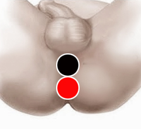

Prostatitis
Par
próstata -próstata

Generalidades:
La próstata es una glándula del sistema reproductor masculino que se encarga de producir parte del líquido que se expulsa en la eyaculación, localizada debajo de la vejiga. Este órgano tiende a crecer continuamente, después de los 40 años puede causar problemas, lo que se conoce como hiperplasia prostática benigna, o también puede inflamarse a causa de algún patógeno u otro factor, dando lugar a prostatitis. Esta condición puede estar asociada o favorecer la aparición de cáncer de próstata.
La vesículitis seminal consiste en la inflamación de las vesículas seminales, comunmente va asociada a la prostatis. Se puede tratar con el mismo par.